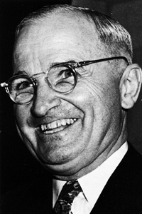
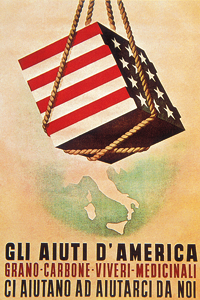

Lezione 20 La guerra fredda
La guerra fredda

-
200
205
-
175
470
-
155
440
-
140
515
-
175
500
-
180
230
-
140
485
-
180
106
-
250
645
-
200
735
-

USA
Il presidente americano Harry Truman, uno dei grandi protagonisti della Guerra fredda.

ITALIA
Un manifesto italiano in favore del piano Marshall: gli aiuti alimentari e di sostentamento piovono dal cielo sui paesi alleati come pacchi avvolti nella bandiera statunitense.PARIGI
Il 12 luglio del 1947 a Parigi si riunisce la conferenza generale che decide la distribuzione degli aiuti economici americani per la ricostruzione dell'Europa, il cosiddetto piano Marshall.
Ecco gli stanziamenti fino al 1951:
Belgio e Lussemburgo - 777 mln. di dollari;
Austria - 488 milioni di dollari;
Danimarca - 385 milioni di dollari;
Francia - 2.296 milioni di dollari;
Germania Ovest - 1.448 milioni di dollari;
Grecia - 366 milioni di dollari;
Islanda - 43 milioni di dollari;
Irlanda - 133 milioni di dollari;
Italia - 1.204 milioni di dollari;
Paesi Bassi - 1.128 milioni di dollari;
Norvegia - 372 milioni di dollari;
Portogallo - 70 milioni di dollari;
Regno Unito - 3.297 milioni di dollari;
Svizzera - 250 milioni di dollari;
Svezia - 347 milioni di dollari;
Turchia - 137 milioni di dollari.POLONIA
Nel settembre del 1947 Stalin riunisce a Szklarska Poreba, in Polonia, i partiti comunisti e laburisti dell'Europa orientale per dare una organizzazione comune ai paesi che rientrano nella sfera di influenza sovietica.
Nasce il Cominform, con la duplice funzione di uniformare i modelli di sviluppo dei singoli paesi, e di controbilanciare la pressione degli Stati Uniti e dei loro alleati europei.BELGRADO
Subito dopo la guerra la Jugoslavia entra nell'orbita sovietica, ma il presidente Tito riesce a mantenere una sua autonomia.
Nel 1948 i contrasti tra lui e Stalin portano all'espulsione della Jugoslavia dal Cominform. Tito si adopera per creare un'organizzazione di paesi non allineati con i due blocchi dominanti.WASHINGTON
Nell'aprile del 1949 a Washington viene istituita la Nato, la North Atlantic Treaty Organization, una alleanza militare di difesa tra 12 paesi occidentali: Belgio, Canada, Danimarca, Francia, Islanda, Italia, Lussemburgo, Norvegia, Olanda, Portogallo, Regno Unito e Stati Uniti.
I paesi membri della Nato sono attualmente 28.VARSAVIA
Nel maggio del 1955 l'Unione Sovietica e i paesi alleati firmano il patto di Varsavia, creando un'organizzazione militare che si contrappone alla Nato fino alla data del suo scioglimento ufficiale, il 31 marzo del 1991.SAN FRANCISCO
A San Francisco, il 26 giugno 1945, si tiene la conferenza che è considerata l'atto di fondazione dell'Organizzazione delle Nazioni Unite. Al primo punto dello statuto l'ONU si propone lo scopo di mantenere la pace e la sicurezza internazionale. La prima assemblea generale si svolge a Londra nel gennaio del 1946 con la partecipazione di 51 stati. La sede centrale viene stabilita a New York.NUOVA DHELI
Il 30 gennaio 1948 muore a Nuova Delhi in un attentato il mahatma (in sanscrito "grande anima") Ghandi, il padre della nazione indiana, l'uomo che aveva saputo sconfiggere il colonialismo inglese predicando la non violenza e la disobbedienza civile di massa. Al momento della morte per mano di un fanatico indù, che lo accusava di cedimenti nei confronti del Pakistan musulmano, non ricopre incarichi politici, ma è ancora considerato la guida spirituale del paese.PECHINO
Il primo ottobre 1949 a Pechino i comunisti guidati da Mao Tse Tung, che sarebbe rimasto al timone del paese fino alla morte nel 1976, proclamano la Repubblica Popolare Cinese, unificando un paese sconvolto dalla dominazione straniera e dalla guerra civile.
Mao si ispira al marxismo leninismo, ma ben presto entra in conflitto con l'Unione Sovietica e sviluppa una politica autonoma che diventa fonte di ispirazione per molti paesi del Terzo Mondo.